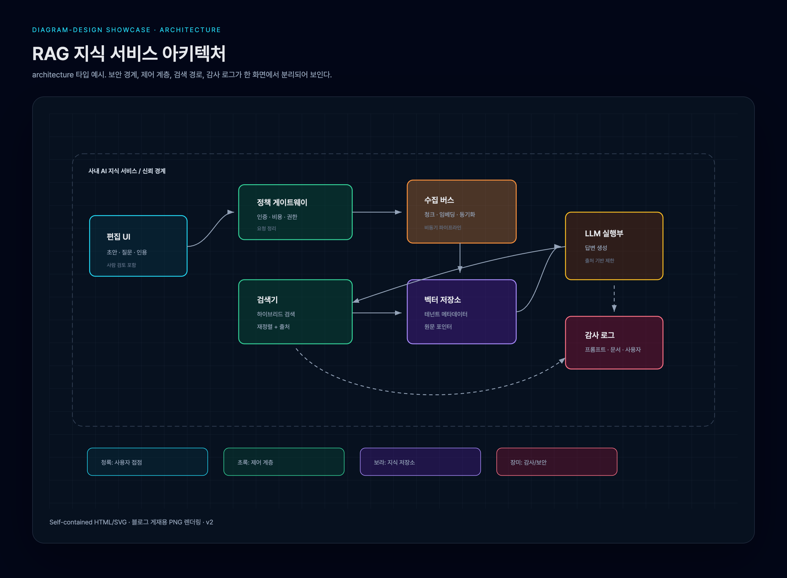
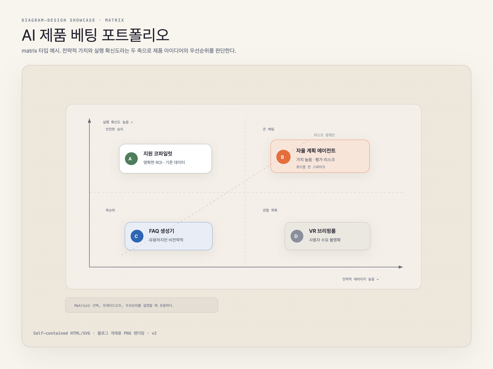
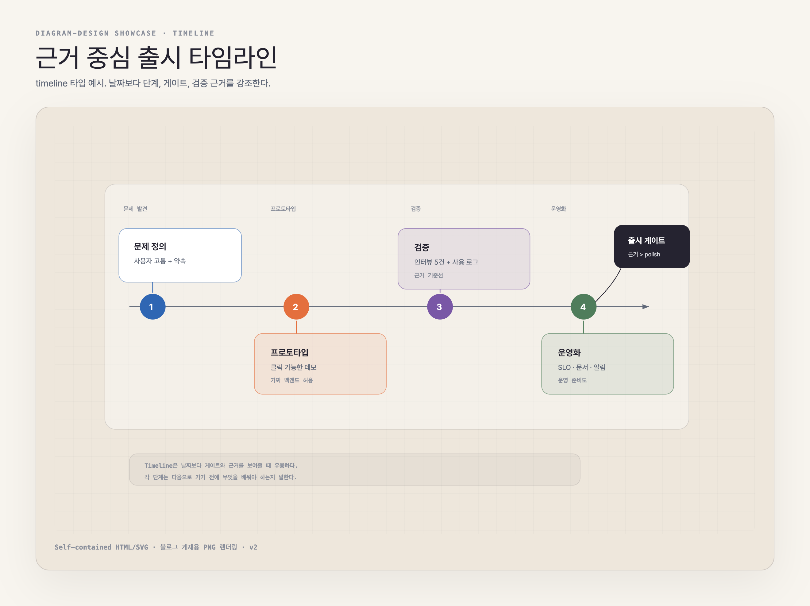
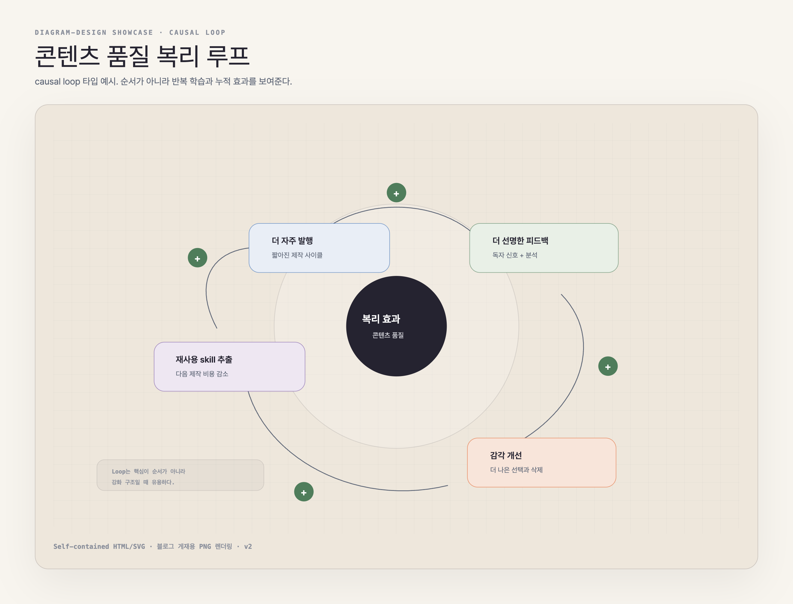

먼저 정리하면
- 이 글은 기술 블로그나 문서에 넣을 AI 다이어그램을 만들 때 프롬프트보다 먼저 정해야 할 기준을 다룬다.
- 좋은 다이어그램은 정보를 더 많이 넣은 그림이 아니라, 독자가 봐야 할 관계만 남긴 그림이다.
diagram-design의 핵심은 예쁜 스타일이 아니라 architecture, matrix, timeline, causal loop처럼 글의 논리에 맞는 타입을 고르는 데 있다.- 블로그에 넣기 전에는 HTML/SVG 원본만 믿지 말고, 실제 폭에서 PNG로 렌더링해 텍스트·선·노드 겹침을 확인해야 한다.
AI에게 “아키텍처 다이어그램 하나 그려줘”라고 시키면 대체로 비슷한 결과가 나온다.
둥근 박스가 줄줄이 나오고, 선은 많고, 색은 의미 없이 들어간다. 구조는 맞는 것 같은데 블로그에 넣고 싶지는 않다. 결국 Mermaid를 조금 고치거나, Figma를 열거나, 그냥 그림을 포기한다.
최근에 본 diagram-design이라는 skill은 이 문제를 꽤 다른 방식으로 푼다. “프롬프트를 더 잘 쓰자”가 아니라, AI에게 다이어그램을 그릴 때 따라야 할 편집 기준과 디자인 시스템을 준다.
이 글에서는 이 skill을 어떻게 활용할 수 있는지, 그리고 실제로 어떤 HTML 결과물이 나오는지 보여준다.
도구: diagram-design이 하는 일
diagram-design는 Claude Code나 Codex에서 사용할 수 있는 다이어그램 생성 skill이다. 지원하는 타입은 architecture, flowchart, sequence, ER, timeline, quadrant, layers, pyramid 등 14가지다.
산출물은 self-contained HTML + inline SVG다. 빌드 과정도 없고, JS도 필요 없다. 파일 하나를 브라우저에서 열면 바로 다이어그램이 보인다.
흥미로운 부분은 하나의 긴 지시문에 모든 기준을 몰아넣지 않는다는 점이다. 핵심 철학과 선택 기준, 다이어그램 타입별 규칙, 색상·폰트 같은 디자인 기준을 서로 다른 레이어로 나눠 관리한다.
즉, AI는 매번 모든 규칙을 한꺼번에 적용하지 않는다. layers 다이어그램을 만들 때는 layers에 필요한 기준을, sequence 다이어그램을 만들 때는 sequence에 필요한 기준을 우선 읽는다.
이게 skill을 잘 설계하는 방식이다.
원칙: 좋은 다이어그램은 더하는 게 아니라 빼는 것이다
이 skill에서 가장 마음에 든 문장은 이거다.
The highest-quality move is usually deletion.
좋은 다이어그램은 정보를 많이 넣은 그림이 아니다. 독자가 처음 봐야 할 구조만 남긴 그림이다.
diagram-design는 accent color를 1~2개의 focal point에만 쓰라고 한다. 노드가 9개를 넘으면 보통 하나의 다이어그램이 아니라 두 개의 다이어그램으로 나누라고 한다. 리스트나 단순 비교는 다이어그램이 아니라 표로 쓰라고 한다.
이런 기준이 없으면 AI는 계속 박스를 추가한다. 설명을 더 붙이고, 선을 더 긋고, 색을 더 넣는다. 하지만 독자는 그런 그림을 읽지 않는다.
예시: 실제로 써보면 어떤 HTML이 나오나
한두 개의 비슷한 예시만 보면 “아, 결국 박스 몇 개 그리는 거구나”라는 인상이 남는다. 그래서 일부러 주제와 시각 문법을 다르게 잡아봤다.
핵심은 이것이다.
diagram-design는 하나의 스타일을 반복하는 도구가 아니라, 글의 논리 구조에 맞는 다이어그램 타입을 고르는 skill에 가깝다.
아래 예시는 모두 self-contained HTML + inline SVG로 만들고, 블로그 게재용으로 PNG 렌더링까지 해둔 결과물이다. HTML/SVG로 만든 덕분에 이미지 안의 문구도 한글로 직접 조정했고, 폰트는 Pretendard를 우선 적용했다. 단순 스크린샷이 아니라, 블로그 독자가 읽을 언어와 타이포그래피까지 통제할 수 있다는 점이 이 방식의 장점이다.
예시 1. 시스템 아키텍처 맵

이런 그림은 기술 글에서 가장 익숙한 architecture diagram이다. 중요한 건 박스가 많다는 점이 아니라, 보안 경계, 데이터 흐름, 저장소, 감사 로그가 각기 다른 역할로 보인다는 점이다.
diagram-design를 잘 쓰면 “API → DB → LLM” 같은 단순 선형 흐름보다, 시스템 안에서 어떤 컴포넌트가 어떤 책임을 갖는지 더 명확하게 보여줄 수 있다.
예시 2. 제품 아이디어 우선순위 매트릭스

모든 다이어그램이 flow일 필요는 없다. “무엇을 먼저 할까?”가 핵심이면 sequence보다 matrix가 낫다.
이 예시는 AI 제품 아이디어를 구현 확신도와 전략적 가치 축으로 나눈다. 독자는 긴 설명을 읽기 전에 Do now, Spike first, Automate later, Park라는 판단 구역을 먼저 본다.
예시 3. 제품 출시 타임라인

시간 순서가 중요할 때는 timeline이 맞다. 단, 좋은 timeline은 단순 일정표가 아니라 각 단계의 검증 기준과 게이트를 보여준다.
이 예시에서는 problem frame, prototype, validation, hardening, ship gate가 하나의 출시 흐름으로 연결된다. 독자는 “언제 무엇을 해야 하는가”보다 “어떤 증거가 있어야 다음 단계로 넘어가는가”를 본다.
예시 4. 콘텐츠 품질 피드백 루프

반복과 누적이 핵심인 주제는 sequence보다 causal loop가 낫다. 순서를 그리면 평범해지지만, 피드백 루프로 그리면 왜 시간이 지날수록 결과가 좋아지는지 설명할 수 있다.
이 예시는 content volume, feedback, taste, reusable skills가 서로 강화되는 구조를 보여준다. “AI로 글을 더 많이 쓴다”가 아니라 “반복 가능한 skill이 생산 비용을 낮추고, 피드백이 편집 감각을 높인다”는 주장이 그림 안에 들어간다.
검증: 렌더링 후 실제 독자 화면에서 확인한다
네 예시는 모두 Chrome/Playwright로 PNG 렌더링한 뒤 다시 이미지로 확인했다. 이후 내부 라벨을 한글로 바꾸고 Pretendard를 적용한 뒤 같은 방식으로 다시 렌더링했다.
검증 기준은 다음과 같이 잡았다.
- Markdown 미리보기와 블로그 폭에서 PNG가 바로 보이는가
- 제목/본문/노드 텍스트가 잘리지 않는가
- 선이 텍스트를 덮거나 노드 내부를 지나가며 지저분해 보이지 않는가
- 네 예시가 서로 다른 다이어그램 타입으로 보이는가
- 단순 “AI가 만든 박스 나열”이 아니라 각 그림이 다른 사고방식을 보여주는가
초기 버전에서는 matrix의 축 라벨과 causal loop의 화살표가 약했다. 최종 버전에서는 카드 배경을 불투명하게 바꾸고, 선과 텍스트의 겹침을 줄여 블로그 게재용으로 쓸 수 있는 상태로 정리했다.
실패 모드: 한 번에 좋은 그림이 나오지는 않았다
여기서 중요한 점이 하나 있다. 위 예시들은 처음부터 이렇게 나온 게 아니다.
처음 만든 다이어그램은 별로였다. 겉으로는 그럴듯했지만, 대부분 비슷한 톤의 박스와 선이었다. 주제는 달라도 보는 사람 입장에서는 “AI가 만든 워크플로우 그림”처럼 보였다. 실제 게시 화면에서 볼 수 있게 PNG로 렌더링까지 했지만, 막상 확인해보니 “이 skill로 어디까지 할 수 있는지”가 잘 드러나지 않았다.
그때 깨달은 건 이것이다.
다이어그램의 품질은 프롬프트 길이보다 다이어그램 타입 선택에서 먼저 결정된다.
처음에는 AI 글쓰기 workflow, Knowledge OS layers처럼 내 맥락에 가까운 예시를 골랐다. 그런데 둘 다 비슷한 편집 스타일 안에 갇혔다. 그래서 방향을 바꿨다. 주제를 내 맥락에 맞추기보다, skill이 만들 수 있는 사고방식의 폭을 보여주기로 했다.
그래서 예시를 네 가지로 다시 나눴다.
구성 요소와 책임을 보여준다 → architecture
선택지의 우선순위를 판단한다 → matrix
단계와 검증 게이트를 보여준다 → timeline
반복과 누적 효과를 설명한다 → causal loop이렇게 나누자 그림이 달라졌다. 단순히 색이나 레이아웃이 달라진 게 아니라, 각 그림이 독자에게 요구하는 읽기 방식이 달라졌다.
architecture는 “무엇이 어디에 있고, 어떤 경계를 넘는가”를 보게 한다. matrix는 “무엇을 먼저 해야 하는가”를 보게 한다. timeline은 “어떤 증거가 있어야 다음 단계로 넘어가는가”를 보게 한다. causal loop는 “왜 시간이 지날수록 효과가 커지는가”를 보게 한다.
좋은 다이어그램을 만들려면 프롬프트를 이렇게 시작하는 편이 낫다.
이 내용을 어떤 그림으로 보여줄 수 있을까?이 질문 없이 바로 “예쁘게 그려줘”라고 하면 AI는 대체로 박스를 늘어놓는다. 반대로 “이 글의 핵심은 우선순위 판단이다”, “이 글의 핵심은 시스템 경계다”, “이 글의 핵심은 반복 루프다”처럼 사고방식을 먼저 정하면 결과가 훨씬 좋아진다.
이번 작업에서 실제로 도움이 된 제작 순서는 이렇다.
-
글의 주장을 한 문장으로 정한다.
예: “반복 가능한 skill은 콘텐츠 생산 비용을 낮추고, 피드백은 편집 감각을 높인다.” -
그 주장이 요구하는 다이어그램 타입을 고른다.
순서라면 timeline, 선택이라면 matrix, 구조라면 architecture, 누적 효과라면 causal loop를 고른다. -
프롬프트에는 미적 취향보다 관계를 쓴다.
“멋지게”보다 “four phases and one ship gate”, “trust boundary”, “risk frontier”, “reinforcing loop” 같은 관계어가 더 중요하다. -
HTML을 만든 뒤 PNG로 렌더링해서 실제 독자 화면에서 본다.
HTML 원본만 보면 괜찮아 보여도, Markdown 미리보기나 블로그 폭에서는 텍스트가 작거나 선이 지저분해질 수 있다. -
검증 기준을 디자인 취향이 아니라 읽기 비용으로 잡는다.
보기 예쁜가보다 “독자가 더 빨리 이해하는가”가 기준이다. -
필요하면 다시 만든다.
이번에도 matrix는 축 라벨이 약했고, causal loop는 선이 텍스트 근처를 지나갔다. 그래서 카드 배경을 불투명하게 바꾸고, 선의 경로와 노드 위치를 조정했다.
이 과정이 바로 skill을 쓰는 이유다. skill은 한 번에 완벽한 그림을 보장하지 않는다. 대신 재시도할 때 무엇을 고쳐야 하는지 기준을 준다. “더 예쁘게”가 아니라 “타입이 맞는가”, “focal point가 보이는가”, “선이 의미를 갖는가”, “이 그림이 문단보다 나은가”를 물어보게 만든다.
적용: 기술 글에서 활용하는 방식
내가 이 skill을 블로그나 위키에서 쓴다면 먼저 다이어그램 타입부터 고를 것 같다.
시스템 구성과 책임을 보여주고 싶다 → architecture
우선순위나 선택 기준을 보여주고 싶다 → matrix / quadrant
단계와 게이트를 보여주고 싶다 → timeline
반복 학습과 누적 효과를 보여주고 싶다 → causal loop
레이어와 승격 구조를 보여주고 싶다 → layers그다음에 프롬프트를 쓴다. 좋은 프롬프트는 “예쁘게 그려줘”가 아니라, 독자가 봐야 할 관계를 지정한다.
Make a timeline diagram for a product launch. Show four phases and one ship gate. Each phase should include the evidence required to move forward.생성된 HTML은 브라우저에서 확인하고 PNG로 렌더링한다. 이때 보는 건 예쁨이 아니다.
- 이 주제에 맞는 다이어그램 타입인가
- focal point가 1~2개로 제한됐는가
- 글의 주장을 그림이 직접 설명하는가
- 단순 작업 순서가 아니라 구조/의존관계/판단 기준이 보이는가
- 표나 문단보다 나은가
- 선과 노드가 과하지 않은가
괜찮으면 HTML은 수정 가능한 원본으로 보관하고, 블로그 글에는 PNG를 넣는다.
구조화: 프롬프트만으로는 부족하다
여기서 중요한 건 “어떤 프롬프트를 쓰면 예쁜 그림이 나오나요?”가 아니다.
프롬프트 하나로 매번 좋은 그림이 나오기를 기대하면 어렵다. 프로젝트마다 톤도 다르고, 글마다 필요한 다이어그램 타입도 다르고, 독자가 봐야 할 포인트도 다르다.
그래서 skill이 필요하다.
skill은 반복되는 판단을 파일로 고정한다.
style-guide.md 색상과 폰트의 기준
SKILL.md 다이어그램을 그릴지 말지 판단하는 기준
type-*.md 타입별 레이아웃 규칙
assets/ 템플릿과 예시이렇게 해두면 AI에게 매번 “촌스럽게 만들지 마”라고 말할 필요가 줄어든다. AI가 따라야 할 기준이 이미 있기 때문이다.
체크리스트: 다이어그램을 만들기 전에 물어야 할 질문
이 skill에서 배울 수 있는 가장 실용적인 기준은 하나다.
이 그림이 문단이나 표보다 독자의 이해를 빠르게 만드는가?
아니라면 만들지 않는 편이 낫다.
리스트는 리스트로 두면 된다. 단순 비교는 표가 낫다. 한 박스짜리 그림은 그냥 문장으로 쓰는 게 낫다.
다이어그램은 장식이 아니다. 독자의 인지 비용을 줄일 때만 쓸모가 있다.
정리
diagram-design는 다이어그램 템플릿 모음이라기보다, AI에게 시각 산출물을 맡길 때 필요한 운영 방식을 보여준다.
좋은 결과물은 프롬프트 하나에서 나오지 않는다. 반복해서 쓸 수 있는 기준에서 나온다. 어떤 타입을 쓸지, 무엇을 강조할지, 어떤 색을 역할로 쓸지, 언제 그리지 말아야 할지까지 정해져 있어야 한다.
그 기준을 skill로 만들어두면 AI는 단순히 “그림을 그리는 도구”가 아니라, 글의 구조를 시각적으로 정리해주는 편집 도구가 된다.
나는 이 방식이 블로그 글, 기술 문서, 위키 운영 문서에 꽤 잘 맞는다고 본다. 특히 글 안에서 복잡한 워크플로우나 레이어 구조를 설명해야 할 때는, 텍스트만으로 밀어붙이는 것보다 훨씬 낫다.
AI 다이어그램이 촌스러운 이유는 모델이 부족해서만은 아니다. 대부분은 기준이 없어서다. 기준을 skill로 만들면 결과물이 달라진다.
참고한 자료
- GitHub:
cathrynlavery/diagram-design - 이 글의 HTML 예시는
diagram-design의 구조와 스타일 가이드를 참고해 만든 재현 예시다.